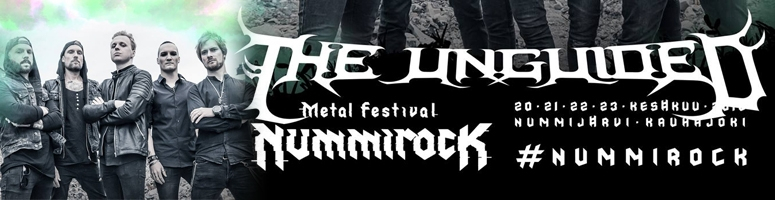
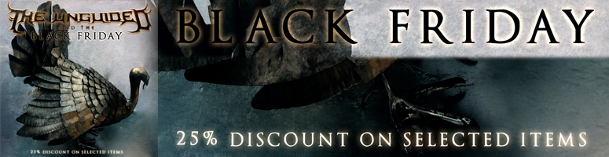
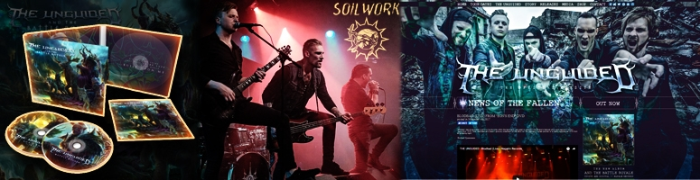

The annual Xmas greeting from The Unguided! A fine tradition since 2010. Follow the band on their Scandinavian tour with Soilwork. Thanks everyone for your support and to a fantastic year! 2018 here we come \m/ Video by: Carl Thorén Productions
The Unguided to play at Nummirock 2018
posted in December 16th 2017

The Unguided is coming back to Finland in 2018 to play at the annual Nummirock festival! More info in the tour section.
Black friday!
posted in November 23th 2017

25% discount on selected items in the web shop. Check it out!
And The Battle Royale released!
posted in November 18th 2017

We just came back from a few incredible shows with Soilwork and it was truly great to open for such amazing act and above all; finally get to release out latest monster; “And The Battle Royale”! By the looks of it, you seem to enjoy it quite a bit and that fact makes us utterly satisfied. As you can see this space got a bit of face lift, there’s more to come as wallpapers will be uploaded and some other minor tweaks. But the rest should be up to date and you can also find the lyrics to “And The Battle Royale” under the “Releases” page. Enjoy!
Blodbad (Live) from "Eon's End" DVD
posted in November 4th 2017
“Blodbad” has always been a bit of a live favorite within the band so it was great to perform it on Roland’s farewell show and capture it for our “Eon’s End” DVD. Fast, relentless and doesn’t give any breathers for the band nor the listeners. A great preview of a clearly spectacular DVD from an amazing night."